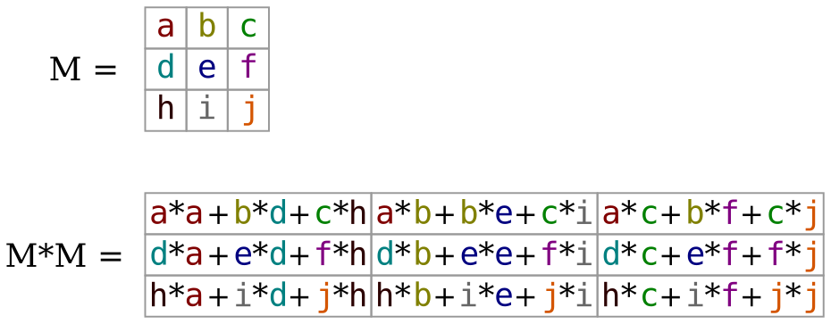
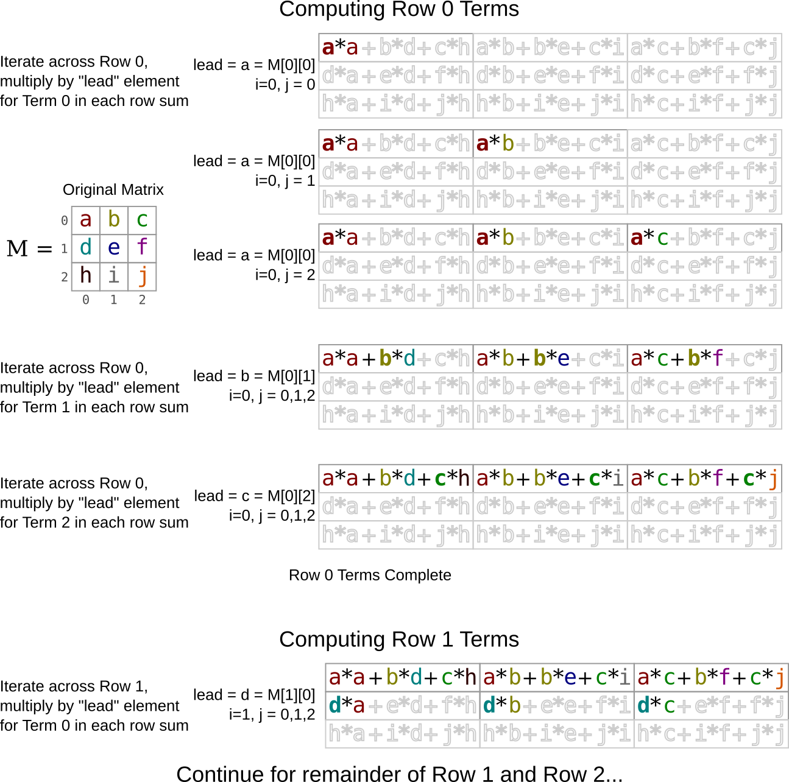

CSCI 2021 Project 4: Performance Optimization and Timing
- Due: 11:59pm Wed 12/01/2021
- Approximately 3.0-4.0% of total grade
- Submit to Gradescope
- Projects are individual work: no collaboration with other students is allowed. Seek help from course staff if you get stuck for too long.
CODE/TEST DISTRIBUTION: p4-code.zip
CHANGELOG:
- Mon Nov 29 03:43:26 PM CST 2021
- Submission is now open on Gradescope.
1 Introduction
This assignment focuses on aspects of optimizing and measuring performance.
- The first problem provides a baseline implementation for a function and asks for a more performant version which runs faster. To do so, one must exploit knowledge of the memory hierarchy and processor pipeline.
- The second problem provides a series of functions for classic search
algorithms and requires implementation of a
main()function to benchmark the performance of those functions.
2 Download Code and Setup
Download the code pack linked at the top of the page. Unzip this which will create a project folder. Create new files in this folder. Ultimately you will re-zip this folder to submit it.
| File | State | Notes |
|---|---|---|
Makefile |
Provided | Problem 1 & 2 Build file |
P4-WRITEUP.txt |
Edit | Fill in answers to assignment questions |
matsquare_benchmark.c |
Provided | Problem 1 main benchmark |
matsquare_print.c |
Provided | Problem 1 testing program |
matvec.h |
Provided | Problem 1 header file |
matvec_util.c |
Provided | Problem 1 utility functions for matrices/vectors |
matsquare_base.c |
Provided | Problem 1 baseline function to beat |
matsquare_optm.c |
EDIT/COMPLETE | Problem 1 create and fill in optimized function definition |
search.h |
Provided | Problem 2 header file |
search_funcs.c |
Provided | Problem 2 search, setup, and cleanup functions |
search_benchmark.c |
EDIT/COMPLETE | Problem 2 timing main() to create |
testy |
Provided | Testing script |
test_matsquare.org |
Provided | Tests to check for memory issues in problem 1 |
test_search_benchmark.org |
Provided | Tests to check for memory issues in problem 2 |
3 Problem 1: Squaring a Matrix
3.1 Overview
A problem that occasionally arises in numerical computing when working with Matrices (2D Arrays) is to compute the Square of a matrix. This is a special case of general matrix multiplication and students unfamiliar with this operation should study it to get some context for the present work.
Terminology can get a little confusing so keep the following in mind.
- A Square Matrix has equal numbers of rows and columns and can be multiplied by itself.
- Squaring a matrix, sometimes notated
M*M = M^2is multiplying a matrix by itself which can only be done if it is a square matrix (equal rows/columns).
The diagram below illustrates the result of squaring a matrix by multiplying it by itself.

Figure 1: 3 by 3 matrix M with colored elements along with result of squaring the matrix as M*M.
Note that that for each of the elements of the squared matrix, the elements are the result of a row multiplied by a column from the original matrix:
MatSq[i][j] = 0;
for(k = 0 to Mat.rows){
MatSq[i][j] += Mat[i][k] * Mat[k][j];
}
The file matsquare_base.c provides a baseline function that performs
this computation in a direct fashion as the above definition indicates
The algorithm uses the most "natural" approach of multiplying each row
by each column to produce the result in the for each part of the
squared result. As you survey the code, note the use of various
convenience macros such as MGET(mat,i,j) interact with the matrix
type used.
// Baseline version
int matsquare_BASE(matrix_t mat, matrix_t matsq) {
if(mat.rows != mat.cols || // must be a square matrix to square it
mat.rows != matsq.rows || mat.cols != matsq.cols)
{
printf("matsquare_BASE: dimension mismatch\n");
return 1;
}
for(int i=0; i<mat.rows; i++){
for(int j=0; j<mat.cols; j++){
MSET(matsq,i,j,0); // initialize to 0s
for(int k=0; k<mat.rows; k++){
int mik = MGET(mat, i, k);
int mkj = MGET(mat, k, j);
int cur = MGET(matsq, i, j);
int new = cur + mik*mkj;
MSET(matsq, i, j, new);
}
}
}
return 0; // return success
}
Note that the original matrix comes in as the parameter mat and the
result of squaring the matrix is stored in the parameter matsq.
While this algorithm is a direct translation of how humans would visually calculate the square of small matrices, it is unfortunately fairly slow when executing on most modern computing systems.
3.2 Optimize Matrix Squaring
The purpose of this problem is to write matsquare_OPTM() which is a
faster version of the provided matsquare_BASE() to calculate the
results.
Write your code in the file matsquare_optm.c.
Keep the following things in mind.
- You will need to acquaint yourself with the functions and types
related to matrices and vectors provided in the
matvec.hand demonstrated in the baseline function. Understanding the layout of the matrix in memory is essential to unlocking performance. - The goal of
matsquare_OPTM()is to exceed the performance ofmatsquare_BASE()by as much as possible. - To achieve this goal, several optimizations must be implemented and suggestions are given in a later section.
- You will need to document your optimizations in the file
P4-WRITEUP.txtand provide timing results of running the optimized version. - Part of your grade will be based on the speed of the optimized code
on the machine
csel-kh1250-NN.cselabs.umn.edu. The main routinematsquare_benchmark.cwill be used for this.
Some details are provided in subsequent sections.
3.3 Evaluation on csel-kh1250-NN
The provided file matsquare_benchmark.c provides a benchmark for the
speed of squaring a matrix. It will be used by graders to evaluate the
submitted code and should be used during development to gauge
performance improvements.
The machines csel-kh1250-NN.cselabs.umn.edu where NN is 01 to
37 will be used for evaluation and the scoring present in
matsquare_benchmark.c is "tuned" to the CPU/Memory on these
machines. That means that codes should be tested on csel-kh1250-NN
so that no unexpected results occur after submission. Results reported
should be from csel-kh1250-NN.
The output of the matsquare_benchmark is shown below.
- SIZE: the size of the matrix being used. The benchmark always uses square matrices
- Runtimes for the 2 functions
- BASE: the time it takes for
matsquare_BASE()to complete. - OPTM: the time it takes for
matsquare_OPTM()to complete.
- BASE: the time it takes for
- SPDUP: the speedup of
matsquare_OPTM()overmatsquare_BASE()which isBASE / OPTM. POINTS: which are earned according to the following code:
double factor = // scale based on size: speedup on (( ((double) size) / ((double) sizes[0]))); // larger matrix worth more points double log2spdup = log2(speedup_OPTM); // log_2 so equal speed is 0 points, 2X is 1pt, etc if(log2spdup < 0){ // no negative scores log2spdup = 0.0; } double points = log2spdup * factor; // scale speedup by size factorThis scheme, while a little involved, means that unless actual optimizations are implemented, 0 points will be scored. It is also weighted towards earning more points on for larger size matrices.
Below are several demonstration runs of matsquare_benchmark.
# BUILD/RUN ON NON-CSEL-KH1250-NN MACHINE: NOTE WARNINGS homeputer> make gcc -Wall -Werror -g -Og -c matsquare_print.c gcc -Wall -Werror -g -Og -c matvec_util.c gcc -Wall -Werror -g -Og -c matsquare_base.c gcc -Wall -Werror -g -Og -c matsquare_optm.c gcc -Wall -Werror -g -Og -o matsquare_print matsquare_print.o matvec_util.o matsquare_base.o matsquare_optm.o gcc -Wall -Werror -g -Og -c matsquare_benchmark.c gcc -Wall -Werror -g -Og -o matsquare_benchmark matsquare_benchmark.o matvec_util.o matsquare_base.o matsquare_optm.o -lm ... homeputer> ./matsquare_benchmark WARNING: expected host 'csel-kh1250-NN' but got host 'homeputer' WARNING: timing results / scoring will not reflect actual scoring WARNING: run on host 'csel-kh1250-NN' for accurate results ==== Matrix Square Benchmark Version 1 ==== SIZE BASE OPTM SPDUP LOG2 FACTOR POINTS 273 6.3082e-02 3.2783e-02 1.92 0.94 1.00 0.94 512 3.3868e-01 1.6586e-01 2.04 1.03 1.88 1.93 722 8.9180e-01 4.7556e-01 1.88 0.91 2.64 2.40 801 1.2462e+00 6.6762e-01 1.87 0.90 2.93 2.64 1024 7.8568e+00 1.3765e+00 5.71 2.51 3.75 9.43 1101 5.1476e+00 1.7365e+00 2.96 1.57 4.03 6.32 1309 1.0345e+01 2.9614e+00 3.49 1.80 4.79 8.65 RAW POINTS: 32.32 TOTAL POINTS: 32 / 35 WARNING: expected host 'csel-kh1250-NN' but got host 'homeputer' WARNING: timing results / scoring will not reflect actual scoring WARNING: run on host 'csel-kh1250-NN' for accurate results # PARTIAL CREDIT RUN csel-kh1250-05> ./matsquare_benchmark ==== Matrix Square Benchmark Version 1 ==== SIZE BASE OPTM SPDUP LOG2 FACTOR POINTS 273 5.7477e-02 3.0015e-02 1.91 0.94 1.00 0.94 512 3.4969e-01 3.1837e-01 1.10 0.14 1.88 0.25 722 8.7826e-01 6.8763e-01 1.28 0.35 2.64 0.93 801 1.2606e+00 1.0596e+00 1.19 0.25 2.93 0.74 1024 6.5164e+00 6.1829e+00 1.05 0.08 3.75 0.28 1101 4.9575e+00 4.5922e+00 1.08 0.11 4.03 0.45 1309 1.0595e+01 9.1156e+00 1.16 0.22 4.79 1.04 RAW POINTS: 4.63 TOTAL POINTS: 5 / 35 # FULL CREDIT RUN csel-kh1250-05> ./matsquare_benchmark ==== Matrix Square Benchmark Version 1 ==== SIZE BASE OPTM SPDUP LOG2 FACTOR POINTS 273 6.3368e-02 1.8595e-02 3.41 1.77 1.00 1.77 512 3.3387e-01 1.2201e-01 2.74 1.45 1.88 2.72 722 7.7923e-01 3.3930e-01 2.30 1.20 2.64 3.17 801 1.2133e+00 4.5901e-01 2.64 1.40 2.93 4.11 1024 7.0291e+00 1.0000e+00 7.03 2.81 3.75 10.55 1101 5.1465e+00 1.2481e+00 4.12 2.04 4.03 8.24 1309 1.0387e+01 2.1238e+00 4.89 2.29 4.79 10.98 RAW POINTS: 41.55 TOTAL POINTS: 35 / 35
Note that it is possible to exceed the score associated with maximal performance (as seen in the RAW POINTS reported) but no more than the final reported points will be given for the performance portion of the problem. There may be Makeup Credit associate with sufficient speedups; if this occurs, output for the program will make this obvious.
3.4 matsquare_print.c Testing Program
As one works on implementing optimizations in matsquare_OPTM(), bugs
which compute incorrect results are often introduced. To aid in
testing, the matsquare_print() program runs both the BASE and OPTM
versions on the same matrix and shows all results. The matrix size is
determined from the command line and is printed on the screen to
enable hand verification. Examples are below.
./matsquare_print 3 # run on 3 by 3 matrix ==== Matrix Square Print ==== Original Matrix: # original test matrix 3 x 3 matrix 0: 0 1 2 1: 3 4 5 2: 6 7 8 BASE Matrix Squared : # results for matsquare_BASE() 3 x 3 matrix 0: 15 18 21 1: 42 54 66 2: 69 90 111 OPTM Matrix Squared : # results for matsquare_OPTM() 3 x 3 matrix 0: 15 18 21 1: 42 59 66 2: 69 103 111 BASE/OPTM Element Comparison: [ i][ j]: BASE OPTM # elemnent by element comparison [ 0][ 0]: 15 15 # to help spot errors in results [ 0][ 1]: 18 18 # for matsquare_OPTM() [ 0][ 2]: 21 21 [ 1][ 0]: 42 42 [ 1][ 1]: 54 59 *** # NON-matching [ 1][ 2]: 66 66 [ 2][ 0]: 69 69 [ 2][ 1]: 90 103 *** # NON-matching [ 2][ 2]: 111 111
3.5 Optimization Suggestions and Documentation
Labs and lectures have covered several kinds of optimizations which
are useful to improve the speed of matsquare_OPTM(). These techniques
include:
- Re-ordering memory accesses to be as sequential as possible which favors cache (very important)
- Increasing potential processor pipelining by adjusting the destinations of arithmetic operations.
- Decreasing any unnecessary work such as memory accesses or arithmetic operations.
These should be sufficient to gain full credit though you are free to explore additional optimizations.
One handy realization most folks will reach is that it is useful to recognize a way to re-order the memory access pattern to favor cache. Recall that the most favorable access pattern for most matrix computations in a row-major programming environment like C is to work across rows. Below is a diagram which suggests one possible way to do this in the context of squaring a matrix. It favors repeated walking across a matrix in a row-wise fashion to avoid the stride required for column-wise access. Study this diagram carefully and consider implementing the approach illustrated as your first optimization. As discussed in lecture, if data is not getting to the processor, other optimizations that favor pipelining/superscalar execution will have no effect so focusing first on the memory access pattern is crucial.

Figure 2: Illustration of how to favor row-wise access to compute squared matrix. Computation of first row results are shown with the beginnings of the second row.
3.6 Grading Criteria for Problem 1 (55%) grading 55
The file P4-WRITEUP.txt has several questions that should be
answered in a similar fashion to lab write-ups. These document the
optimizations used in matsquare_OPTM() require a justification for
their use.
| Weight | Criteria |
|---|---|
| AUTOMATED TESTS | |
| 5 | No memory errors reported by Valgrind via make test-prob1 |
MANUAL INSPECTION of matsquare_optm.c |
|
| 35 | Performance of matsquare_OPTM() on csel-kh1250-NN.cselabs.umn.edu |
As measured by the provided matsquare_benchmark |
|
| 5 | Clean and well-documented code for matsquare_OPTM() |
P4-WRITEUP.txt |
|
| 2 | Answer 1A P4-WRITEUP.txt (source code) |
| 3 | Answer 1B P4-WRITEUP.txt (timing table) |
| 5 | Answer 1C P4-WRITEUP.txt (optimizations description) |
4 Problem 2: Timing Search Algorithms
4.1 Overview
This problem centers on timing several algorithms to measure their performance. This will require use of C timing functions which have been demonstrated in various parts of the class including the previous problem.
You will measure the performance of 4 search functions which simply
determine whether an integer query is present in an associated data
structure. All of these along with associated setup functions are
provided in the search_funcs.c file. The search algorithms are as
follows.
- Linear Search in an Array
- The array need not be sorted and is searched from beginning to end.
- Linear Search in a Linked List
- Nodes are linked together and the list is searched for a query from beginning to end.
- Binary Search in a Sorted Array
- The classic divide and conquer algorithm which repeatedly halves the search space.
- Binary Search in a Tree
- A binary search tree enables searching for a query by following left/right branches.
If you do not have a sense of the relative computational complexities of these algorithms, you should review these as they should factor into your analysis of the timings of the algorithms.
As was the case for problem 1, you can develop your timing program on
any platform but the analysis should be conducted on
csel-kh1250-NN.cselabs.umn.edu to ensure comparability.
4.2 main() in search_benchmark.c
The requirements from this problem is that you provide a main()
function in the file search_benchmark.c with the following features.
- Runs on a range of sizes that can be specified on the command line. A typical approach is to allow one to specify a minimum and maximum size of the search data structures and repeatedly double starting at the minimum and ending at the max.
Create "even" data in the structures using the provided functions.
make_even_array()for arraysmake_even_list()for linked listsmake_even_trees()for trees
This will populate the data structure with the sequence
0,2,4,...,(len-1)*2. This data population allows searches for items that are known to be present (even numbers) and items that are known not to be present (odd numbers).Perform a variable number of searches on the data structures. This should be done the following way.
- On the command line the number of repetitions of searches should be specified on the command line.
- Search for every element in the data structures the given number of repetitions.
- Search an equal number of times for elements NOT in the data structure.
A typical example method for this is as follows. For a size 100 data structure perform
- An outer loop over the number of repetitions
- An inner loop that searches for the numbers
0,1,2,3,4,...,(2*len)-1
This pattern searches for an equal number of present/not-present items.
Measure the Total Time for the Entire Search Loop for a given algorithm. Since individual searches will take a minuscule amount of time, the Total Time for the loop is the most robust measure to discuss. While such a time may include some artifacts such as incriminating loop variables, these will be "charged" to all algorithms equally so that the comparison remains fair. Avoid use of functions like pow() as these will introduce unnecessarily calculations inflating the measured times. Favor multiplications to increase size such as
cur_search_size = cur_search_size * 2;
Enable any combination of algorithms to be tested by specifying which are to be run on the command line. The required way to do this is to accept a command line argument which enables which search types should be done. The associated characters with each algorithm are
afor linear array searchbfor binary searchlfor linked list searchtfor tree search
Specify a command line argument which enables the searches:
l: run linked list search onlyab: run linear array search and binary array searchalt: run all but the binary array searchablt: run all algorithms- If no string is specified, run all algorithms
- Ensure that an equal number of searches is done for each of the algorithms being benchmarked.
- Ensure that the timing that is done is ONLY for searching and not for setup and cleanup for the data structures.
- Ensure that there are no memory leaks or other problems in setup and cleanup for the searches.
4.3 Running Algorithms based on Command Line Arguments
Many folks who have not had to handle command line arguments struggle
some what with the style of search_benchmark so here is some
additional guidance on handling this aspect of the program.
Run the algorithms in a fixed order
An invocation like
./search_benchmark 5 10 10 al
should run the linear array search (a) and linear linked list search
(l). So should the invocation
./search_benchmark 5 10 10 la
Since we are interested only in comparing timing for these algorithms, the order of which is run first and printed first does not matter so run the algorithms and print results in a fixed order. That is, both of the above will run the array search first and linked list search second giving identical ordering results:
> ./search_benchmark 5 10 10 al
LENGTH SEARCHES array list
32 640 1.2345e+06 1.2345e+06
64 1280 1.2345e+06 1.2345e+06
128 2560 1.2345e+06 1.2345e+06
256 5120 1.2345e+06 1.2345e+06
512 10240 1.2345e+06 1.2345e+06
1024 20480 1.2345e+06 1.2345e+06
> ./search_benchmark 5 10 10 la # still running linear array search first
LENGTH SEARCHES array list
32 640 1.2345e+06 1.2345e+06
64 1280 1.2345e+06 1.2345e+06
128 2560 1.2345e+06 1.2345e+06
256 5120 1.2345e+06 1.2345e+06
512 10240 1.2345e+06 1.2345e+06
1024 20480 1.2345e+06 1.2345e+06
Search times above are intentionally left out so you will need to trust your own code to get an idea of how long things are running. However, very short run times are generally unreliable. Aim for a minimum time of 1e-03 seconds in order to make sure your results are reliable. Shorter times like 1e-05 will vary too much to trust.
Use Boolean-like variables to track which algorithms to run
If following the advice of the previous section, to run the 4
algorithms in a fixed order, one can simple assign variables in
main() which indicate which algorithms to run as in the following.
int run_linear_array = 0; int run_linear_list = 0; ...
Later, these variables are checked in a conditional as in:
if(run_linear_array){
// run loops to time linear search in an array
}
if(run_linear_list){
// run loops to time linear search in a list
}
...
When processing the command line argument associated with which algorithms to run, one can 'turn on' the algorithm if the associated character is present according to the following pseudo-code
set algs_string to argv[4]
for(i=0; i < length(algs_string); i++){
if(algs_string[i] == 'a'){
do_linear_array = 1;
}
...
}
While the above approach does not allow one to run algorithms in an arbitrary order, it does allow any combination of algorithms to be run and compared which is all that is needed to complete the timing.
Free and Re-allocate Memory for Different Sizes
While the search functions for Linked Lists and Binary Search Trees
both take size arguments, these are ignored in the searches. Instead,
NULL's in the data structures are used to find the bounds of them.
This means if one is searching for data that is not in a small list,
the end of the data structure will be reached sooner and not found
will be determined faster than if searching in a large list. To that
end allocate data structures that are sized specifically to the
search size each time. Do NOT allocate one large data structure and
do all size searches on it as this will create artificially bad
timings for the linked structures.
4.4 Sample main() Runs
Below are some sample runs of the main() function and output that is
produced. Note that the times have intentionally been set to all
identical times. Your exact output may vary some but main() must
use the command line options as indicated below. These arguments are
- Minimum data size (power of 2)
- Maximum data size (power of 2)
- Number of repeats
- (Optional) Characters specifying which search algorithms to run. If this is omitted, run all algorithms.
> ./search_benchmark
usage: ./search_benchmark <minpow> <maxpow> <repeats> [which]
which is a combination of:
a : Linear Array Search
l : Linked List Search
b : Binary Array Search
t : Binary Tree Search
(default all)
# run all algorithms, single repetition of searches
> ./search_benchmark 9 14 1
LENGTH SEARCHES array list binary tree
512 1024 1.2345e+06 1.2345e+06 1.2345e+06 1.2345e+06
1024 2048 1.2345e+06 1.2345e+06 1.2345e+06 1.2345e+06
2048 4096 1.2345e+06 1.2345e+06 1.2345e+06 1.2345e+06
4096 8192 1.2345e+06 1.2345e+06 1.2345e+06 1.2345e+06
8192 16384 1.2345e+06 1.2345e+06 1.2345e+06 1.2345e+06
16384 32768 1.2345e+06 1.2345e+06 1.2345e+06 1.2345e+06
# Note that SEARCHES is 2*LENGTH as 1 successful and 1 unsuccessful
# search is run for each element in the data structure
# run linear array, linked list, binary array search algorithms, 10 repetition of searches
> ./search_benchmark 5 10 10 alb
LENGTH SEARCHES array list binary
32 640 1.2345e+06 1.2345e+06 1.2345e+06
64 1280 1.2345e+06 1.2345e+06 1.2345e+06
128 2560 1.2345e+06 1.2345e+06 1.2345e+06
256 5120 1.2345e+06 1.2345e+06 1.2345e+06
512 10240 1.2345e+06 1.2345e+06 1.2345e+06
1024 20480 1.2345e+06 1.2345e+06 1.2345e+06
# run linear binary array and tree search algorithms, 2 repetition of searches
> ./search_benchmark 14 19 2 bt
LENGTH SEARCHES binary tree
16384 65536 1.2345e+06 1.2345e+06
32768 131072 1.2345e+06 1.2345e+06
65536 262144 1.2345e+06 1.2345e+06
131072 524288 1.2345e+06 1.2345e+06
262144 1048576 1.2345e+06 1.2345e+06
524288 2097152 1.2345e+06 1.2345e+06
4.5 Proper Setup and Cleanup for Searches
Each search algorithm requires setup and cleanup which is described below. All these follow the same patter which can enable somewhat more elegant setup/search/cleanup which is discussed in the section on bonus credit.
Linear and Binary Array Search
Use the function make_evens_array() to create an appropriately
sized int array for these functions. Call free() on this array
when finished with it.
Linked List Search
Use the function make_evens_list() to create an appropriately
sized list_t. Call list_free() on this list when finished with
it.
Binary Tree Search
Use the function make_evens_tree() to create an appropriately
sized bst_t. Call bst_free() on this list when finished with
it.
4.6 What to Measure
The reason for the requirements mentioned above is to study the
performance of different search algorithms and answer associated
questions in the P4-WRITEUP.txt. The main goals of these questions
are to elucidate.
- To compare the linear and logarithmic search complexities to see if one or the other is superior at small and large input sizes
- To compare the contiguous memory (array) approaches to the linked memory (list/tree) approaches to see if one or the other is superior at small and large sizes.
To that end make sure to answer the thoroughly answer questions provided.
4.7 MAKEUP CREDIT: Code Layout in search_benchmark.c
"Makeup" credit will allow the score on this assignment to exceed 100% but will not allow the overall score on the project portion of the grade to exceed the weight specified in the syllabus. It is designed to help "make up" for lost credit on previous assignments.
Makeup credit is available in this assignment for implementing the selection of which search functions to run in an "elegant" fashion. Likely the best method for this is to use a table of function pointers. This style is demonstrated in Lab09 and Lab11 but must be expanded upon in this lab to reach its full potential.
The main purpose to using such a table is to avoid a large if/else
or switch/case block. For example, a simple approach to doing
different search types is something like the following.
int main(...){
int do_linear_array = 1;
int do_linked_list = 1;
...;
for(all sizes){
if(do_linear_array){
// setup array
// start timer
// do searches
// stop timer
// print output
// free the array
}
if(do_linked_list){
// setup list
// start timer
// do searches
// stop timer
// print output
// free the list
}
...;
}
}
This formulation obviously involves a much redundant code. A good way to avoid this is to parameterize the repeated parts as functions and iterate over the table invoking functions appropriate to the different types of searches.
To get a sense of how this might work, here is an incomplete example setup used in one solution.
// Table of search algorithms
searchalg_t algs[] = {
{"Linear Array Search", "array", 'a', 1,
(search_t) linear_array_search, (setup_t) make_evens_array, (cleanup_t) free},
{"Linked List Search", "list", 'l', 1,
(search_t) linkedlist_search, (setup_t) make_evens_list, (cleanup_t) list_free},
...
{NULL}
};
None of the types are given in the above but several notable things are present.
- The types of searches are described in an array (table) of structs
- Each field pertains to a description or function for the search
- Some of the functions are for setup, others for cleanup, and the first is the actual search function.
- Casting is required to get the different function prototypes to "fit" into the same kind of struct.
- All of the searches are enabled by default but fields can changed to disable them.
- One only needs to iterate through the array invoking appropriate
functions. This avoids the need for a large
if/elsestyle program.
To complete this part, document your code with comments and also
describe you design using function pointers/structs in
P4-WRITEUP.txt.
4.8 Grading Criteria for Problem 2 (45%) grading 45
| Weight | Criteria |
|---|---|
| AUTOMATED TESTS | |
| 5 | Passed tests associated with make test-prob2 |
MANUAL INSPECTION of search_benchmark.c |
|
| 2 | Accepts parameters that control the min/max data sizes and number of repeats |
| 2 | Proper searching for success and fail elements |
| 2 | The Total Search Loop Time is measured for each algorithm and reported, not an average per search |
| 2 | Timing does not include memory allocationo/de-allocation |
| 2 | Allocates data that is exactly to search sizes to prevent handicapping lists and arrays |
| 5 | Clean and well-documented code for main() that uses simple approaches to run algorithms requested |
| 15 | SUBTOTAL |
P4-WRITEUP.txt |
|
| 2 | Timing results larger than 1e-03 seconds for most cases; smaller times are unreliable. |
| 3 | Answer 2A P4-WRITEUP.txt (min size for differences) |
| 5 | Answer 2B P4-WRITEUP.txt (list vs array) |
| 5 | Answer 2C P4-WRITEUP.txt (tree vs array)) |
| 10 | Answer 2D P4-WRITEUP.txt (caching effects)) |
| 25 | SUBTOTAL |
| OPTIONAL MAKEUP CREDIT | |
| 10 | Use a table of function pointers effectively in search_benchmark.c |
Must describe this design in section 2E of P4-WRITEUP.txt |
5 Writeup
This assignment involves answering questions in the file
P4-WRITEUP.txt which is included in the code pack and pasted below.
____________
P4 WRITEUP
____________
- Name: (FILL THIS in)
- NetID: (THE kauf0095 IN kauf0095@umn.edu)
Answer the questions below according to the project specification. Write
your answers directly in this text file and submit it along with your
code.
PROBLEM 1: matsquare_OPTM()
===========================
Do your timing study on csel-keller1250-NN.cselabs.umn.edu
(A) Paste Source Code
~~~~~~~~~~~~~~~~~~~~~
Paste a copy of your source code for the function `matsquare_OPTM()'
####################### YOUR ANSWER HERE #########################
##################################################################
(B) Timing on csel-kh1250-NN
~~~~~~~~~~~~~~~~~~~~~~~~~~~~
Paste a copy of the results of running `matsquare_benchmark' on
csel-kh1250-NN.cselabs.umn.edu in the space below which shows how your
performance optimizations improved on the baseline codes.
####################### YOUR ANSWER HERE #########################
##################################################################
(C) Optimizations
~~~~~~~~~~~~~~~~~
Describe in some detail the optimizations you used to speed the code
up. THE CODE SHOULD CONTAIN SOME COMMENTS already to describe these
but in the section below, describe in English the techniques you used
to make the code run faster. Format your descriptions into discrete
chunks such as.
Optimization 1: Blah bla blah... This should make run
faster because yakkety yakeety yak.
Optimization 2: Blah bla blah... This should make run
faster because yakkety yakeety yak.
... Optimization N: Blah bla blah... This should make run
faster because yakkety yakeety yak.
Full credit solutions will have a least two optimizations and describe
WHY these improved performance in at least a couple sentences.
####################### YOUR ANSWER HERE #########################
##################################################################
PROBLEM 2: Timing Search Algorithms
===================================
Do your timing study on csel-kh1250-NN.cselabs.umn.edu. In most cases,
report times larger than 1e-03 seconds as times shorter than this are
unreliable. Run searches for more repetitions to lengthen run times.
(A) Min Size for Algorithmic Differences
~~~~~~~~~~~~~~~~~~~~~~~~~~~~~~~~~~~~~~~~
Determine the size of input array where one starts to see a measurable
difference in the performance of the linear and logarithmic
algorithms. Produce a timing table which includes all algorithms
which clearly demonstrates an uptick in the times associated with some
while others remain much lower. Identify what size this appears to be
a occur.
####################### YOUR ANSWER HERE #########################
##################################################################
(B) Linear Search in List vs Array
~~~~~~~~~~~~~~~~~~~~~~~~~~~~~~~~~~
Determine whether the linear array and linked list search remain
approximately at the same performance level as size increases to large
data or whether one begins to become favorable over other. Determine
the approximate size at which this divergence becomes obvious. Discuss
reasons WHY this difference arises.
####################### YOUR ANSWER HERE #########################
##################################################################
(C) Binary Search in Tree vs Array
~~~~~~~~~~~~~~~~~~~~~~~~~~~~~~~~~~
Compare the binary array search and binary tree search on small to
very large arrays. Determine if there is a size at which the
performance of these two begins to diverge. If so, describe why this
might be happening based on your understanding of the data structures
and the memory system. If not, describe why you believe there is
little performance difference between the two.
####################### YOUR ANSWER HERE #########################
##################################################################
(D) Caching Effects on Algorithms
~~~~~~~~~~~~~~~~~~~~~~~~~~~~~~~~~
It is commonly believed that memory systems that feature a Cache will
lead to arrays performing faster than linked structures such as Linked
Lists and Binary Search Trees. Describe whether your timings confirm
or refute this belief. Address both types of algorithms in your
answer:
- What effects does Cache have on Linear Search in arrays and lists
and why?
- What effects does Cache have on Binary Search in arrays and trees
and why?
####################### YOUR ANSWER HERE #########################
##################################################################
(E) OPTIONAL MAKEUP CREDIT
~~~~~~~~~~~~~~~~~~~~~~~~~~
If you decided to make use of a table of function pointers/structs
which is worth makeup credit, describe your basic design for this
below.
####################### YOUR ANSWER HERE #########################
##################################################################